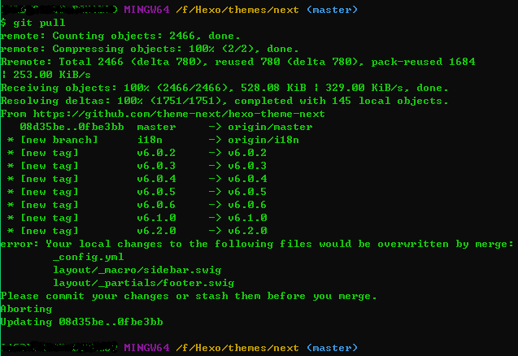

就在今天，我的博客成功迁移至Hexo。本文讲述了我是怎么把博客从WordPress迁移至Hexo的，主要是Hexo环境的搭建和WordPress的文章怎么迁移到Hexo。
之前使用『WordPress』搭建的博客，找了个简约的主题『Akina』，感觉还不错。至于为什么突然换『Hexo』了？还是应为不经意间在掘金上看到2018，你该搭建自己的博客了！了这篇文章，发现Hexo + Next非常符合我的口味儿，并且可以部署到GitHub Pages上，也就是说不用购买服务器了（此处省了好多个羊蹄儿…），另外还支持Markdown。
安装 Hexo
安装前提
安装Hexo前，需要安装下列应用程序，如果已经安装，可以跳过这一步。
安装 Hexo
1 | npm install hexo-cli -g |
安装Git部署扩展
1 | npm install hexo-deployer-git --save |
修改站点配置文件
1 | deploy: |
Hexo 初始化配置
1 | hexo init hexo # 新建Hexo目录并初始化 |
然后就能在localhost:4000看到本地的效果了。
配置Next主题
Next最新版本是v6.0.1。
克隆主题
1 | cd hexo |
生成“标签”和“分类”页面
Next默认是没有“标签”和“分类”页面的，需要自己去新建页面，然后在主题配置文件里打开页面的注释。1
2hexo new page tags # 生成“标签”页
hexo new page categories # 生成“分类”页
新建后修改页面index.md文件1
2type: "tags"
comments: false
修改站点配置文件
1 | title: giser.xyz # 标题 |
修改主题配置文件
1 | # 菜单 |
本地查看
1 | hexo g |
部署到GitHub
1 | hexo clean |
clean命令：清除缓存文件(db.json)和已生成的静态文件(public)。在某些情况（尤其是更换主题后），如果发现您对站点的更改无论如何也不生效，您可能需要运行该命令。
WordPress 迁移
现在Hexo环境配置好了，接下来将WordPress的文章迁移到Hexo。
安装 hexo-migrator-wordpress
1 | npm install hexo-migrator-wordpress --save |
导出 WordPress 文章
WordPress仪表盘——工具——导出——选择“文章”。会得到一个xml文件，包含文章标题、内容、标签、分类等数据。
迁移
1 | hexo migrate wordpress <source> # source是导出的文件地址 |
重新生成部署后，即可看到迁移过来的文章了。
重装系统后配置Hexo
前提：原Hexo文件夹还保留。
以下安装和配置方法参考2018，你该搭建自己的博客了。
- 安装Node.JS、Git、Hexo
- 配置SSH Keys
- 添加SSH Keys到GitHub上
Next 主题更新
备份
更新主题后，需要重新修改主题配置文件，先备份
主题文件夹：themes/next
更新
1 | git pull |
如果修改过配置文件，是无法直接拉取新内容的，如下：

可选两种方式更新：a. 强制覆盖本地文件；b. 重新clone。
重新修改配置文件
配置文件夹：themes/next/_config.yml